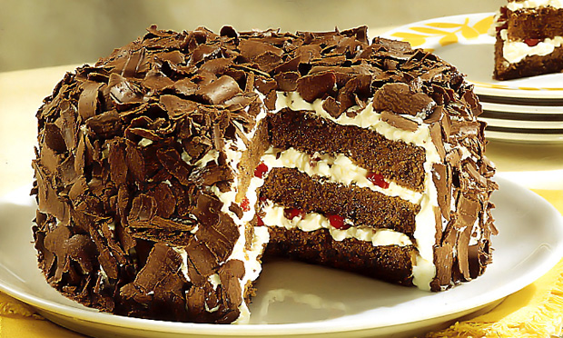

Dani Doces Artesanais
Deu aquela vontade de comer um doce bonito, saboroso e que parece ter saído de uma vitrine?
Doces e bolos artesanais muito saborosos e que farão sucesso! Opções doces e bolos deliciosos diversificados, vai ficar difícil escolher apenas um, não é mesmo?
Se você quiser surpreender ainda mais o seu amado(a), deixe o dia ainda mais especial com a festa na caixa!
A SOBREMESA QUE DEIXA QUALQUER MOMENTO MAIS GOSTOSO.
Nosso Estabelecimento
Nosso estabelecimento está localizado no coração da cidade.
Beneficios
- Produtos de qualidade.
- Amor pelo trabalho.
- Respeito ao cliente.
- Honestidade.
- Transparência.